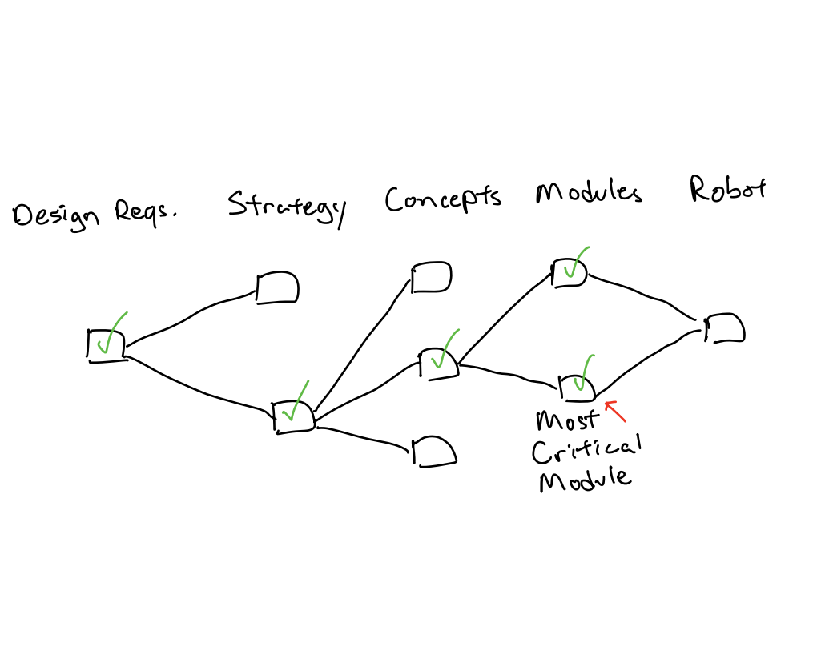
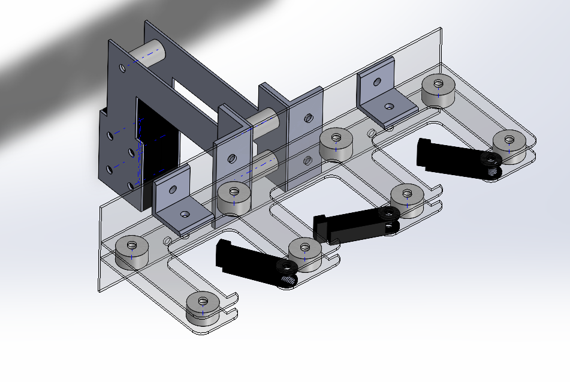
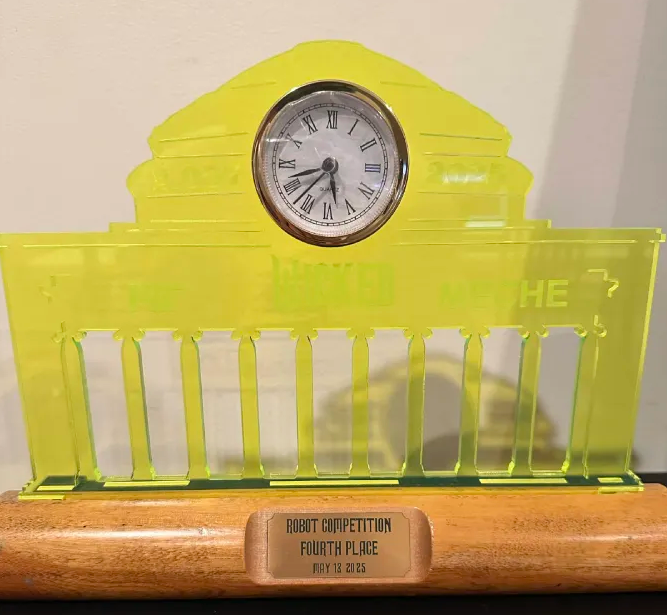

Design and Manufacturing I

Overview
Design and Manufacturing I teaches how to think and work like a design engineer by combining analysis, experimentation, measurement, and synthesis. The course builds both technical competence and confidence through a semester-long robot design challenge, with this year's competition themed around the musical Wicked. It develops skills in idea generation, estimation, concept selection, visual thinking, computer-aided design (CAD), mechanism design, machine elements, basic electronics, technical communication, and engineering ethics. The project requires taking real-world measurements to establish design requirements, analyzing those requirements to determine effective design features, and ultimately fabricating and testing a robot that competes to score points.
Project goals:
- Prototype, test concepts, and iterate to improve performance, reliability, and overall design.
- Generate, compare, and evaluate multiple design strategies and concepts and translate them into functional mechanisms.
- Manage the design process within time, budget, material, and technical constraints.

Strategies and Concepts
Points are scored on a two-level game board, with the robot completing different tasks to earn points. Each task is worth a different number of points, as detailed in the rulebook. After evaluating several strategies using a Pugh chart, I chose to focus on pulling the head and flipping the levers. This approach offered the greatest scoring potential while minimizing the complexity of the mechanisms required, with an estimated total score of 374 points. I then developed multiple concepts for the head-pulling and lever-flipping mechanism and used another Pugh chart to select Concept 3*, which uses a hook to grab the head and a latch system to engage the levers.
*Note: I later simplified the design by moving the robot itself rather than using a cam-and-follower mechanism. This approach was easier to fabricate and reduced the overall complexity of the system.

Modules
The most critical module (MCM) was the lever-flipping mechanism, since it was the robot's primary means of scoring points. I selected a carabiner-style mechanism that allowed each lever to enter the module while preventing it from slipping back out. Based on the design requirements, the mechanism required a torsion spring with a spring constant of approximately 0.0073 Nm/rad, providing enough compliance for the lever to latch into the gap while still allowing the gate to close afterward.
To minimize the weight of the cantilevered MCM, acrylic sheet and Delrin were used for its structure. Because the robot needed to repeatedly move back and forth while using the MCM to actuate the levers, calculations indicated that it should be capable of traveling faster than 0.7 m/s. Based on this requirement, I selected 25:3 speed servo motors to drive the robot's wheels.
Although not shown here, bevel gears were used to rotate the MCM because one end of the module functions as a pulley while the opposite end contains the carabiner mechanisms. The robot also had to fit within the initial 12×12×16 in. starting volume, so the carabiners were stored 180° from their active orientation and rotated into position after the match began.

To pull the Oz head, I designed a winch-and-hook mechanism that allows the robot to engage the head from underneath. Using the known coefficient of friction between the wheels and the game board, I calculated that the robot needed to weigh at least 1.27 kg to prevent it from being pulled backward during operation. I also used three hooks instead of one to increase the likelihood of engaging the hole in the Oz head, since precise alignment was difficult.
Results
My robot competed against other designs across multiple rounds and ultimately placed 4th out of 140 students. Its highest score was 392 points, closely matching the 376-point estimate developed during the strategy-generation phase. I was also awarded the Magic Broom Prize, which recognizes the speediest or most nimble robot in the competition.
